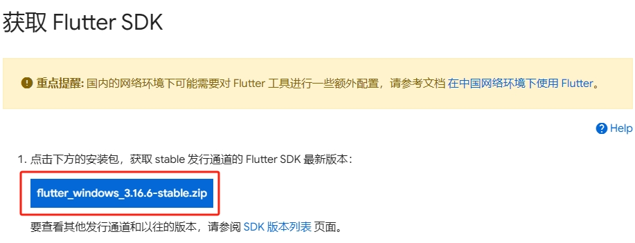

Flutter 为软件开发行业带来了革新：只要一套代码库，即可构建、测试和发布适用于移动、Web、桌面和嵌入式平台的精美应用。
Flutter SDK 安装
下载 Flutter SDK
在官网选择对应的电脑系统平台（我这里是 Windows），下载最新的 flutter sdk
解压 Flutter SDK
解压缩下载的文件，把其中的 flutter-sdk 目录整个放在你想放置 Flutter SDK 的路径中（如：D:\dev 目录下）
配置环境变量
打开搜索框（默认快捷键：Win+S），输入：env，打开“编辑系统环境变量”，选择“高级”，然后打开“环境变量(N)…”
然后在“用户变量”处，新增三项
1 | FLUTTER_GIT_URL="https://mirrors.tuna.tsinghua.edu.cn/git/flutter-sdk.git" |
选中“Path”变量，然后点击“编辑”，在新面板中添加解压后的 flutter sdk 的命令目录路径（我这里是 D:\dev\flutter-sdk\bin）
打开 cmd 窗口，键入 flutter doctor，执行检查，查看确实的配置项。
安装并配置 Java 环境
下载 JDK 17
打开官网，切换到对应的操作系统平台，下载 JDK 17
配置环境变量
将下载好的文件安装到默认位置，然后打开 “编辑系统环境变量”面板，选择“高级”选项，进入“环境变量”编辑面板，在“系统变量”栏新增一项 JAVA_HOME，对应的值是jdk的安装目录，如下所示：
1 | JAVA_HOME="C:\Program Files\Java\jdk-17" |
然后双击打开“Path”变量编辑面板，新增两项：
1 | JAVA_HOME%\bin |
安装并配置 Android SDK 环境
下载 Android SDK
打开官网链接，下载对应平台的 Android SDK
注1：建议切换到英文环境，可以确保下载的是最新版本
注2：这里仅下载命令行工具，若下载 Android Studio，则不需要要看后面的操作
解压Android SDK
解压缩下载的文件，然后把其中的 android-sdk 目录整个放在你想放置 Android SDK 的路径中（如：D:\dev 目录下）
更新 Android SDK 命令行工具
进入 android-sdk\cmdline-tools\ 目录，然后新建一个 /latest文件夹，并将其余文件和文件夹都移到 /latest文件夹下。
然后打开 cmd 命令行窗口，执行（执行完毕后请勿关闭，后续还需用到）：
1 | # 切换到 android-sdk 的命令目录下 |
安装 SDK 基本组件
需要的基本组件如下所示（选择目前最新的 android-34版本）：
- platform-tools
- android-34
- build-tools-34.0.0
打开官网链接：platforms-tools、build-tools，查看对应的版本（这里建议安装最新版本），返回上一步的 cmd 命令窗口，执行：
1 | # 安装platforms-tools |
配置环境变量
等待安装完成后，再次打开“编辑变量”编辑面板，在“系统变量”一栏新增一项 ANDROID_HOME ：
1 | 值是对应的 android-sdk 目录路径 |
然后双击打开“Path”变量，新建一项：
1 | ANDROID_HOME%\cmdline-tools\latest\bin |
打开 cmd 命令窗口，执行：
1 | 协议确认，看到提示时输入 y，回车就可以了 |
安装第三方模拟器
下载和安装逍遥模拟器
打开官网链接，下载并安装逍遥模拟器
运行“逍遥多开器”，然后新建一个安卓9.0模拟器（默认的7.1模拟器版本过低）)
替换逍遥模拟器的 adb.exe 文件
替换
adb.exe文件是为了确保使用相同版本的安卓调试桥
复制 android-sdk 下（我的是 D:\dev\android-sdk\platform-tools）的 adb.exe 文件，到“逍遥模拟器”的安装目录下（我的是 D:\Promram Files\Microvirt\MEmu），替换掉“逍遥模拟器”自带 adb.exe 文件
连接逍遥模拟器
新建一个bat批处理文件（如：connect_xy.bat），输入：
1 | adb kill-server |
启动逍遥模拟器后，双击上面创建的bat批处理文件，若看到如下结果，则表明已成功连接“逍遥模拟器”
VS Code 也能看到已连接成功：
验证
执行 flutter doctor 检查
完成以上操作后，新开一个 cmd 命令行窗口，然后 执行 flutter doctor 检查，此时可以看到 Android toolchain 一项前面的绿钩和 Connect device（4 available），默认只有浏览器设备和桌面设备（如Chrome、Edge 和 Windows）：
- 未启动并连接逍遥模拟器
- 启动并连接逍遥模拟器
在 VS Code 中运行项目，等待安装前面 android-sdk 协议所确认的项目，安装完成就会连接到“逍遥模拟器”运行App。
如果安装完成后长时间不能连接到“逍遥模拟器”，可以停止并重新运行项目。首次运行需要花一点时间，后面再次运行就快了。